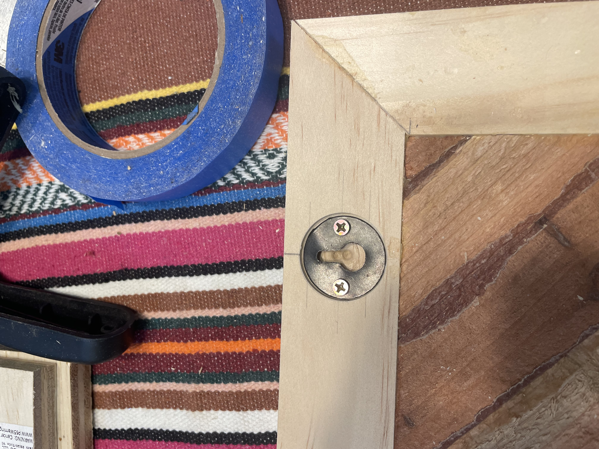
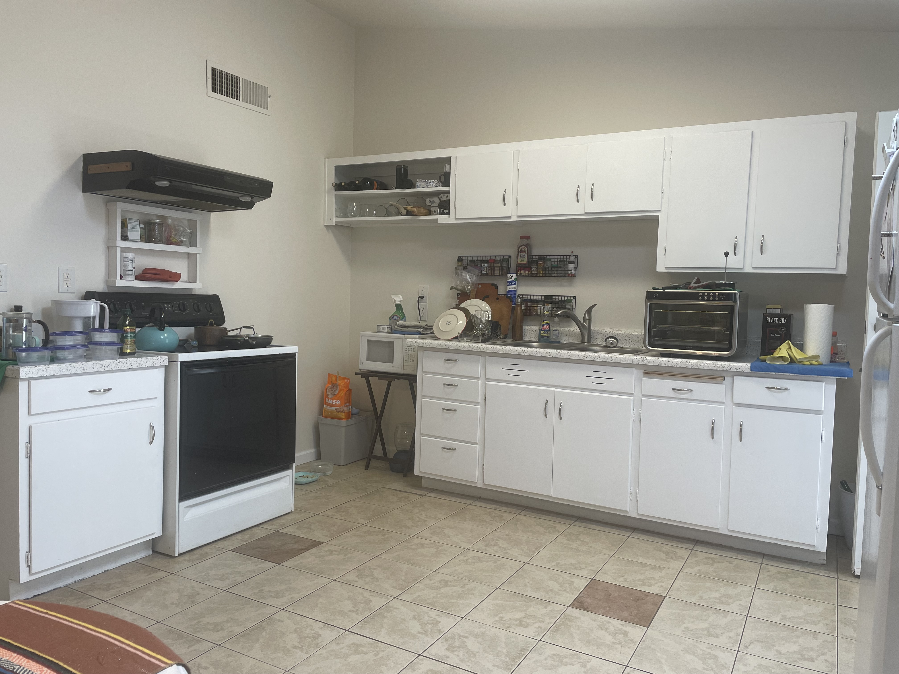
I moved from Pennsylvania to southern Arizona in April of 2022, and after a year and a half of renting, at two different locations, I decided I was ready to buy a home. The place I settled on was a blank slate - in good structural condition, but in need of some work and updating.
I decided to tackle the kitchen first. The cabinetry is original to the home and was installed in 1968. Its what’s called Stick Built, which just means it was built in long sections, rather than as individual cabinets, as is the modern practice. As you can see, about half of it was missing, and what’s left is in rough shape. Especially in areas adjacent to removed sections, due to the demo work.
After going back and forth on what I wanted to do…tear it out and start over or try to repair and rebuild the missing sections, I went with the ladder. I also decided to make new drawer fronts and doors to replace the dated look of stick built cabinetry.
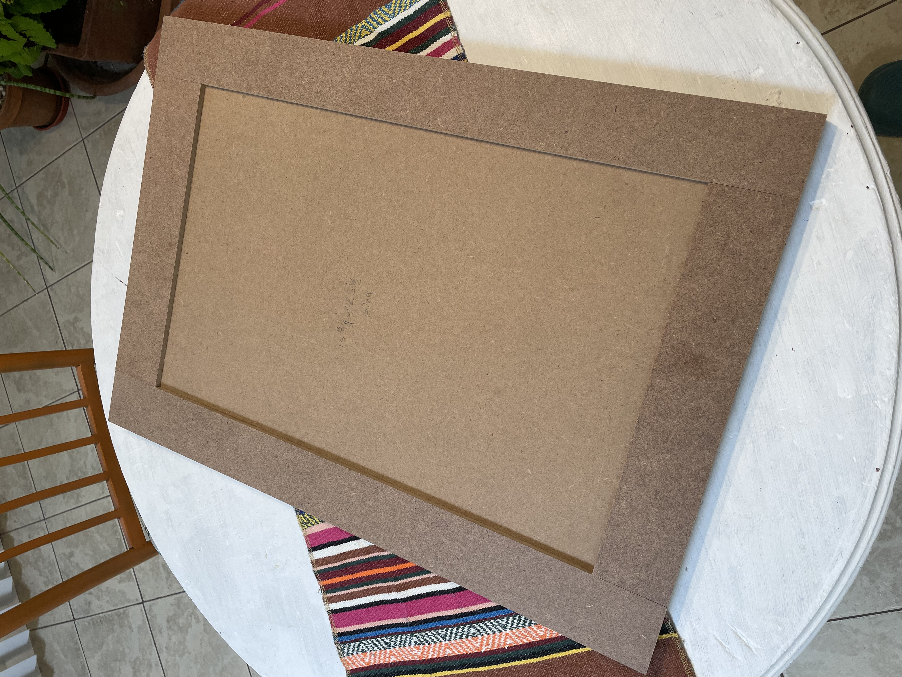
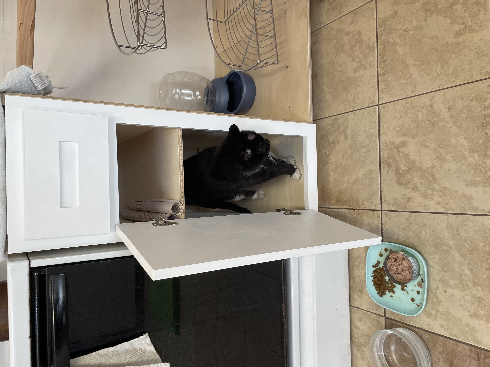
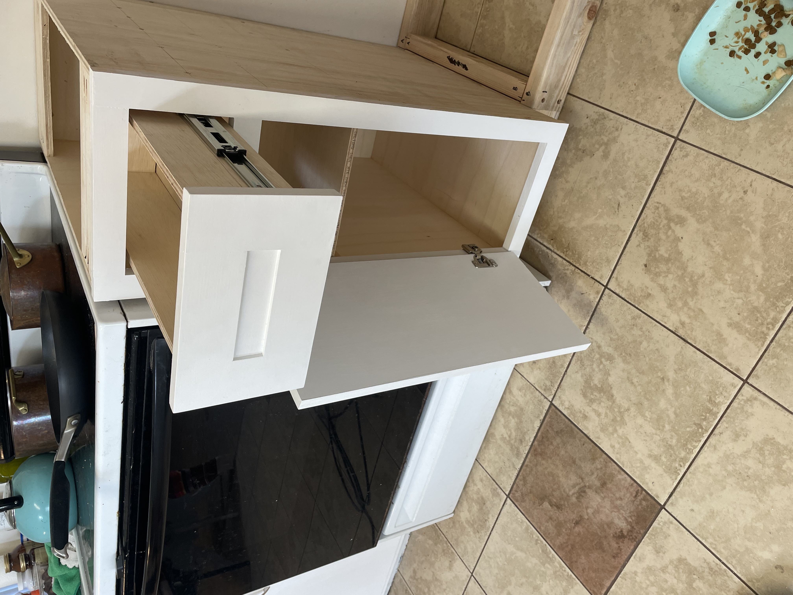
I had a very limited set of woodworking tools, as I had given away a lot of my equipment when I left Pennsylvania. I also had to have an electrician pull wire to a couple of sheds so that I could set up a wood and metal shop. The first thing I did was prototype a faux shaker style drawer cover. I used MDF and masonite. I prefer real wood, but this fit the budget and is more forgiving when you don’t have higher end tools.
It became immediately clear that the Ryobi table saw I had was not a great choice for this kind of work. I struggled with it, a chop saw and a skill saw and started upgrading my tools as my budget would allow. My son was kind enough to get me a DeWalt table saw for Christmas, which made life infinitely better! I also got a drill press, jigsaw and various jigs for installing hardware.
After settling on a drawer / doors style, I then made one prototype lower cabinet designed to go to the right of the stove. I was happy with how it came out so I used it as my template for the rest of the cabinets
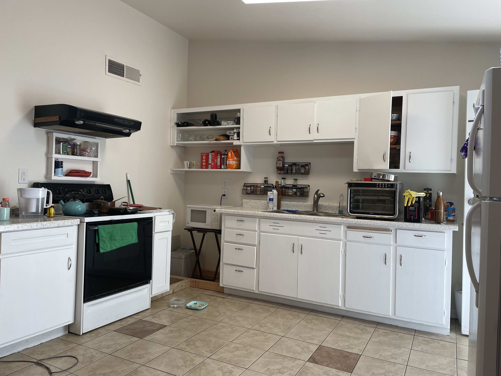
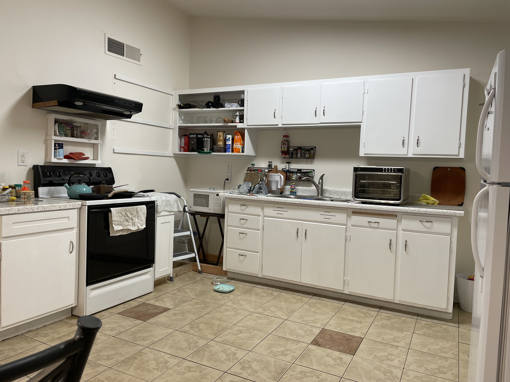
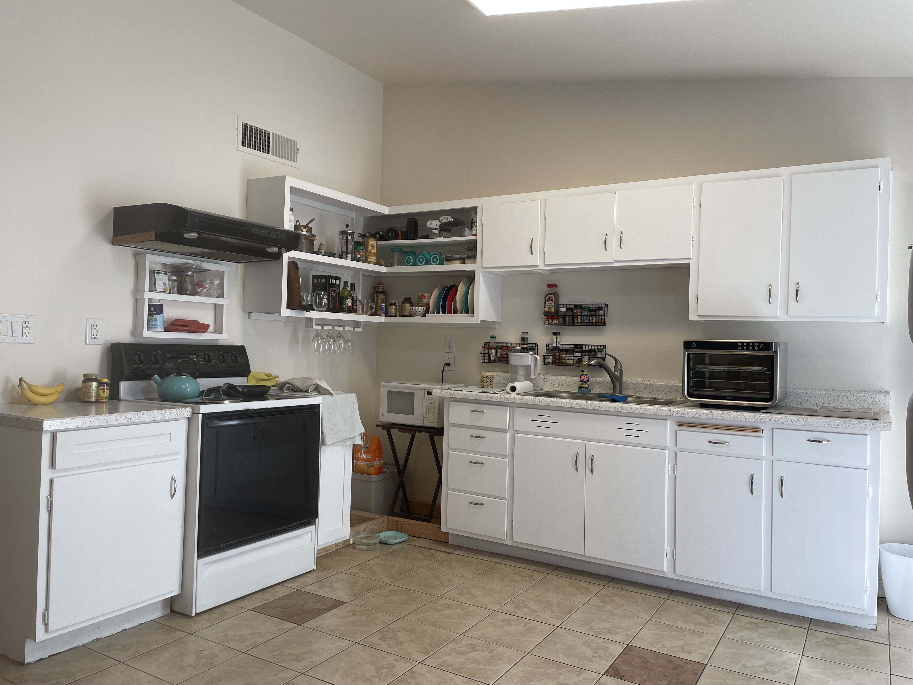
I then began working on an open shelving concept for the upper corner cabinets. I did this this for ease of getting to things I use often, and because I can’t remember where I put things half the time! So this solved both issues.
We all know that square and plumb walls are a lovely idea, but rarely do we encounter them. The corner varies from 88 degrees to 93 degree and the wall bows out to the right of the vent hood and then flattens above and below it. This made tying into the existing shelves challenging. A lot of scribing and and crazy cuts were needed. My new DeWalt jig saw made the job pretty easy. I used dowels to marry the new shelves into the old one. There were certainly easier ways to do this, but I really wanted the to be design to be as open as possible.
The finishing touches include a wine glass holder and plate rack. I also built toe boxes for the lazy Susan. You can see them on the floor - a simple 2 x 4 design.

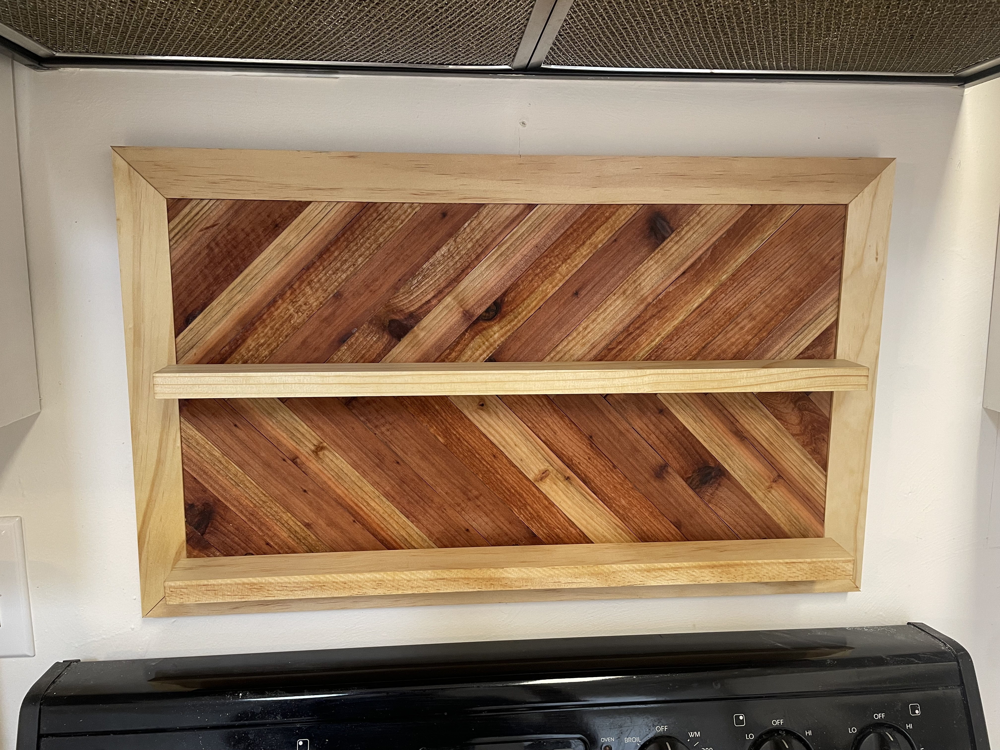
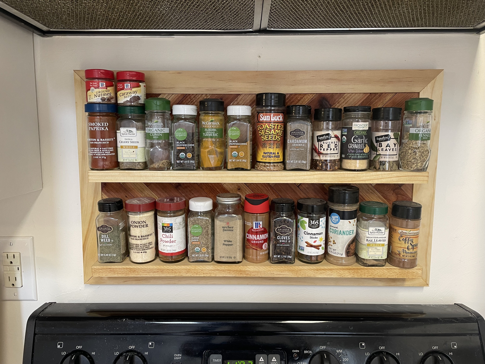
Next was a new spice rack made from scraps of cedar fence planks and some pine trim. I finished it with linseed oil.
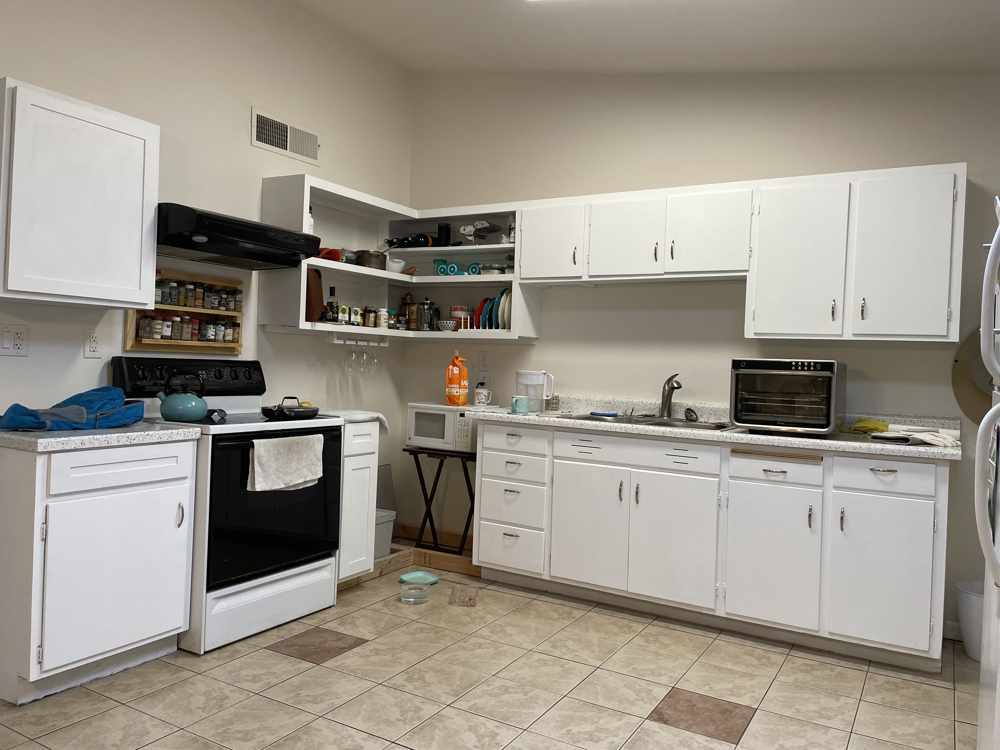
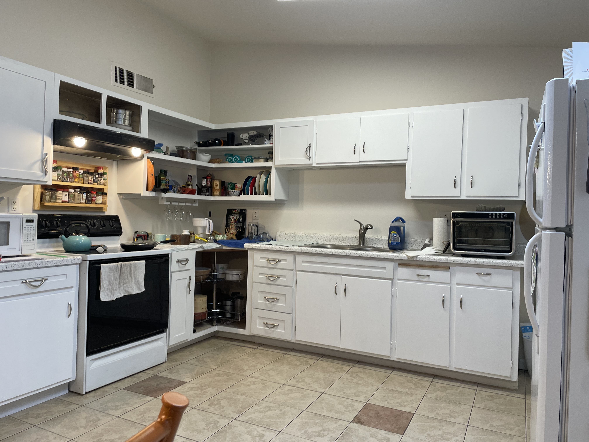
After that, I built the upper to the left of the stove. The wall continued to be uncooperative and I ran into more bowing issues, but I fought my way though them.
I had skipped the box over the stove as I was deciding if I wanted a microwave there or a vent. I decided on a new vent hood, which I will install later, and sized the cabinet box accordingly. I then moved on to the lazy Susan. Cutting the floor boards required more scribing and crazy cuts, but the rest of it actually went pretty smoothly.
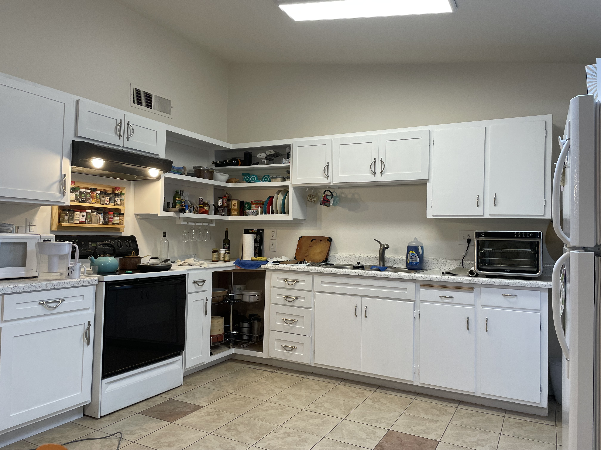
I picked out hardware and I’m down to making the remaining doors and drawers. The only exception is the lower to the right of the sink. This will be gutted and house a dishwasher.
Stay tuned...